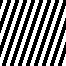
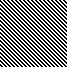
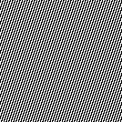

Introduction au Traitement du Signal
SI-101 (OASIS)
matfontaine.github.io/INTRO-OASIS
12 Février 2024

Evaluation
Généralités
Votre note sera constituée :- D'une note de contrôle continu sur 4 partitionné entre des Quizz et les présentations de vos projets
- D'une note d'un contrôle sur table sur 16 (3h - mardi 23/04 - 8h30-11h30)
E-Campus est votre ami !
Pour acceder au E-Campus de votre cours, connectez vous et:- Aller dans SI-101
- Scrollez pour ensuite arriver sur Groupe 4 APP (2024)
- Vous trouverez alors les diapos, vidéos, description des projets APP, feuilles de TD et quizz dessus !
- Egalement l'emploi du temps ici
Qu'est-ce que l'apprentissage par projet (APP) ?
- On se concentre ici sur la réalisation de petits projets en groupe
- Votre apprentissage du cours se fait en autonomie via des vidéos, le polycopié, les échanges entre vous ou avec les enseignants
- Les informations extraites sont alors celle que vous appliquerez pour mener à bien votre projet
- Des TDs et restructurations sont en outre mis en place pour s'assurer la bonne compréhension du cours
En résumé, l'APP vous forme à un savoir "on the fly". C'est souvent de cette façon que l'on acquiert un savoir dans
"la vie professionnelle" pour mener un projet à bien.
Deux projets d'APP cette année en groupes. Le premier commence demain !
Plan de la présentation
I - Organisation du module
II - Premier exemples : détection du rythme & déclipage
III - Fourier en traitement du signal
IV - La compression par Fourier & application
V - Super résolution
II -Premier exemples : détection du rythme & déclipage
Estimation du rythme musical (1/4)
De loin ça a l'air simple ! et de près ?
Estimation du rythme musical (2/4)

Un certain nombres de fluctuations ... pas si évident !
Estimation du rythme musical (3/4)
$\rightarrow$ On détecte les enveloppes dans un premier tempsEstimation du rythme musical (4/4)
$\rightarrow$ On cherche les variations de ces enveloppes$\rightarrow$ Enfin, on fait une détection de pic avec un seuil et le tour est joué !
Exemples (1/2)
Exemples (2/2)
Déclicage d'un signal audio
III - Fourier en traitement du signal
Pourquoi la transformée de Fourier ?
- Elle permet d'analyser des signaux d'un point de vue fréquentiel
- On peut ainsi capturer une approximation de la périodicité d'un signal
- Cela permettra pour après une compréhension plus aisée de la notion de SLI et servira pour l'échantillonnage
Quelle sont les différentes transformée de Fourier et leurs liens ?
Rappels des espaces $\ell^1, \ell^2, \ell^\infty$
Il s'agit les princpaux espaces sur lesquels la transformée de Fourier est effectuée. Définition (espaces $\ell^1, \ell^2, \ell^\infty$)
Soit $u:=(u_n)_{n\in \mathbb{Z}}$ une suite réelle ou complexe. Alors:- $u \in \ell^1 \Leftrightarrow \sum_{n \in \mathbb{Z}}|u_n| < +\infty$
$\rightarrow$ la norme de cette espace est $\| u\|_1 = \sum_{n \in \mathbb{Z}}|u_n|$ - $u \in \ell^2 \Leftrightarrow \sum_{n \in \mathbb{Z}}|u_n|^2 < +\infty$
$\rightarrow$ la norme de cette espace est $\| u\|_2= \sqrt{\sum_{n \in \mathbb{Z}}|u_n|^2}$ - $u \in \ell^\infty \Leftrightarrow \exists C \in \mathbb{R}^+, \forall n \in \mathbb{Z},~ |u_n| < C$
$\rightarrow$ la norme de cette espace est $\| u\|_\infty= \underset{n \in \mathbb{Z}}{\sup}\{|u_n|\}$
- si $u\in \ell^1, v \in \ell^\infty$ alors $u\times v \in \ell^1$ et $\boxed{\|u\times v\|_1 \leq \|u\|_1\|v\|_\infty}$
- si $u\in \ell^2, v \in \ell^2$ alors $u\times v \in \ell^1$ et $\boxed{\|u\times v\|_1 \leq \|u\|_2\|v\|_2}$
Remarque: $\ell^1 \subset \ell^2 \subset \ell ^\infty$
Convolution dans $\ell^1, \ell^2, \ell^\infty$
Il s'agit les princpaux espaces sur lesquels la transformée de Fourier est effectuée. Définition (produit de convolution)
Soit $u:=(u_n)_{n\in \mathbb{Z}}, v:=(v_n)_{n\in \mathbb{Z}}$ deux suites réelles ou complexes.
Alors le produit de convolution (noté $\ast$) est défini par :Transformée de Fourier à temps Discret (TFtD)
- Les suites du type $n \mapsto e^{2i\pi\nu n}$ sont appelés ondes de Fourier sur $\mathbb{Z}$
- Choisir une fréquence d'onde $\nu$ ou $\nu +1$ est équivalent.
$\quad \rightarrow$ On choisit alors $\nu \in [-\frac{1}{2}, \frac{1}{2}[$
Définition [Transformée de Fourier à temps Discret (TFtD)]
Soit $u \in \ell^1$. La TFtD (notée $\hat{u}$ ou $\mathcal{F}(u)$) est la fonction définie sur $[-\frac{1}{2}, \frac{1}{2}[$ par:
TFtD d'une impulsion
La TFtD d'une impulsion en m comme suit:Symétrie, cas d'une suite réelle
Dans la suite, $u \in \ell^1$. Propriétés [Propriétés de symétrie et caractérisation de suites réels]
On a les résultats suivants :- Si $u$ est symétrique, alors $\hat{u}$ l'est aussi $$ \left(\forall n \in \mathbb{Z}, u_{-n}=u_n\right) \Longrightarrow\left(\forall \nu \in [-\frac{1}{2}, \frac{1}{2}[, \hat{u}(-\nu)=\hat{u}(\nu)\right) $$
- Si $u$ est réelle, alors $\hat{u}$ admet la symétrie hermitienne $$ \left(\forall n \in \mathbb{Z}, u_n \in \mathbb{R}\right) \Longrightarrow\left(\forall \nu \in [-\frac{1}{2}, \frac{1}{2}[, \hat{u}(-\nu)=\overline{\hat{u}(\nu)}\right) $$
- Si $u$ est réelle symmétrique, alors $\hat{u}$ l'est aussi: $$ \left(\forall n \in \mathbb{Z}, u_{-n}=u_n \in \mathbb{R}\right) \Longrightarrow\left(\forall \nu \in [-\frac{1}{2}, \frac{1}{2}[, \hat{u}(-\nu)=\overline{\hat{u}(\nu)} \in \mathbb{R}\right) $$
Opérations sur la TFtD
Dans la suite,$u,v \in \ell^1$ et $\nu_0 \in [-\frac{1}{2}, \frac{1}{2}[$. On pose la $m$-translatée de $u$ (notée $u^m$) et définie pour $n \in \mathbb{N}$ par $u^{m}(n) := u(n-m)$ Propriétés [Opérations sur la TFtD]
On a les résultats suivants sur la TFtD:- La convolution de la TFtD devient un produit et le produit une convolution
$$ \widehat {u \ast v} = \hat{u}\hat{v}, \qquad \widehat{uv} = \hat{u} \ast \hat{v} $$ - La multiplication par $ \phi: n \mapsto e^{2i\pi \nu_0 n}$ décale la TFtD de $\nu_0$ :
$$ \forall \nu \in [-\frac{1}{2}, \frac{1}{2}[, \mathcal{F}(u\times \phi)(\nu) = \hat{u}(\nu - \nu_0) $$ - Décaler de $m$ revient à multiplier la TFtD par $\psi: \nu \mapsto e^{ -2i\pi m \nu}$ :
$$ \mathcal{F}(u^m)(\nu) = (\hat{u}\times \psi)(\nu) $$
Egalité de Parseval pour la TFtD
On rappelle que : $ \\\rightarrow f \in L^2([-\frac{1}{2}, \frac{1}{2}[) \Leftrightarrow \int_{-\frac{1}{2}}^{\frac{1}{2}} |f(x)|^2 dx < \infty$. $\\\rightarrow$ On note alors : $ \|f\|_2 = \sqrt{\int_{-\frac{1}{2}}^{\frac{1}{2}} |f(x)|^2 dx}$ Théorème [Egalité de Parseval]
On a les résultats suivants :- $\mathcal{F}$ est l'unique bijection entre $\ell^2$ et $L^2([-\frac{1}{2}, \frac{1}{2}[)$ qui coïncide avec la TFtD sur les suites sommables.
- De plus, nous avons l'égalité de Parseval :
$$ \forall u \in \ell^2, \|\hat{u}\|_2^2 = \|u\|_2^2 $$ - Autrement dit, on a la relation:
$$ \int_{-\frac{1}{2}}^{\frac{1}{2}} |\hat{u}(\nu)|^2 d\nu = \sum_{m \in \mathbb{Z}} |u_m|^2 $$
En soit, l'énergie dans le domaine spectral est égale à celle dans le domaine temporel.
Théorème d'inversion de la TFtD
La TFtD est qualiifié en TDS de "banc de filtres à reconstruction parfaite". Cela signifie que la reconstruction à partir de la TFtD redonne la suite d'origine. Théorème [d'inversion de la TFtD]
On a les résultats suivants :- si $u \in \ell^2$ (ou $\ell^1 \subset \ell^2$) est d'énergie finie alors on a :
$$ \forall n \in \mathbb{Z}, u_n = \int_{-\frac{1}{2}}^{\frac{1}{2}} \hat{u}(\nu)e^{2i\pi n\nu}d\nu $$
Transformée de Fourier Discrète (TFD)
- Il existe un autre type de transformée sur les suites finies : la transformée de Fourier Discrète (TFD)
- C'est la seule qu'on peut calculer par ordinateur numériquement (on a pas une mémoire infinie !)
- Toutes les suites sont sommables, d'énergie finie et bornées (car sur un ensemble fini)
- Sauf contre indication, on notera $u$ une suite définie sur $\llbracket 0, N-1\rrbracket$
Définition de la TFD
Définition [Transformée de Fourier Discrète]
La Transformée de Fourier discrète (TFD) d'une suite $u$ sur $\llbracket 0, N-1\rrbracket$ est:- $k$ est souvent appelé la fréquence (même s'il sagit plutôt d'une sorte d'indexation)
$\quad \rightarrow$ en effet la vraie fréquence est plutôt $\frac{k}{N}$
Théorème d'inversion de la TFD
La nature est bien faite ! la TFD est aussi un "banc de filtre à reconstruction parfaite" enfin presque ... Théorème [Inverse de la TFD]
Soit $u$ une suite définie sur $\llbracket 0, N-1\rrbracket$ et $\hat{u}$ sa TFD. alors on a :- Les $(e^{2i\pi \frac{k}{N}n})_{k\in \llbracket 0, N-1\rrbracket}$ forment une base orthonormée.
- Ainsi, la TFD inverse est la décomposition d'une suite à support finie dans cette base
Les propriétés liés à la TFD sont globalement les mêmes que pour la TFtD :
on remplace $\nu \in [-\frac{1}{2}, \frac{1}{2}[$ par $\frac{k}{N}$ (cf. poly). On a de plus Parseval !
Egalité de Parseval pour la TFD
Théorème [Egalité de Parseval]
Pour une suite $u$ à support finie sur $\llbracket 0, N-1\rrbracket$ on a l'égalité :
Exemple de TFD d'un signal complexe
On considère un signal de la forme (pour lequel on trace le module de la TFD ainsi que la partie réelle de $u$ en bleu) :Question: Quelle courbe de droite correspond à quel pic de gauche ?
- $\nu =\{0.01, 0.05, 0.1\}$ correspond à $\texttt{"[orange, rouge, vert]"}$
- $\nu =\{0.01, 0.05, 0.1\}$ correspond à $\texttt{"[vert, orange, rouge]"}$
- $\nu =\{0.01, 0.05, 0.1\}$ correspond à $\texttt{"[rouge, vert, orange]"}$
Exemple de TFD d'un signal réel
On considère une somme de sinusoïdes :
On retrouve bien la symétrie hermitienne
Lien entre la TftD et la TFD
Motivations
- Pour rappel, la TFD est la seule transformée calculable sur un ordinateur
- Ce lien sera important pour analyser un signal sur $\mathbb{Z}$ puis pour l'échantillonnage (cf. plus tard)
Formalisation du problème
- Soit une suite $u$ sur $\mathbb{Z}$ et à support fini.
- Spdg., il existe un entier $N$ tel que $u_n=0,~ \forall n < 0 $ ou $\forall n \geq N$
- Si on prend $M \geq N$ et la suite $v$ tel que $ \forall m \in \llbracket 0, M-1 \rrbracket, v_m = u_m$
Alors $v$ est simplement la restriction de $u$ à $\llbracket 0, M-1 \rrbracket$
Analyse d'une suite à support fini : zéro padding
Si on fait la TFD sur $v$ alors $\forall k \in \llbracket 0, M-1 \rrbracket$ on obtient : $$ \begin{aligned} \hat{v}(k) &= \sum_{n \in \llbracket 0, M-1 \rrbracket}v_n e^{-2i\pi\frac{k}{M}n} \\ &=\sum_{n\in \mathbb{Z}}u_n e^{-2i\pi\frac{k}{M}n} \qquad\quad {\color{blue}\small(u_n=0 \text{ si } u_n \notin \llbracket 0, N-1 \rrbracket \text{ et } M \geq N)}\\ &= \hat{u}\left(\frac{k}{M}\right) \end{aligned} $$la TFD à l'ordre $M$ d'une suite à support fini est l'échantillonnage de la TFtD aux points
$\frac{k}{M}, ~ k \in \llbracket 0, M-1 \rrbracket \rightarrow v$ est le zéro-padding à l'ordre $M$ de $u$
Représentation de la TFD
L'indexation de la TFD peut être ramené à une "vraie" fréquence réduite sur $[-0.5, 0.5[$ en faisant :- $\nu = \frac{k}{N}$ (on est alors sur $[0,1[$)
- par $1$-périodicité, on retranche $1$ pour les $\nu \in [0.5, 1[$ (le sens ne change pas)
- la représentation est plus facile à interprêter
Détermination de la fréquence d'une onde de Fourier via la TFD
Position du problème
- Soit $u_n = e^{2i\pi \nu_0 n}$ avec $n_0 \in [-\frac{1}{2}, \frac{1}{2}[$
- On veut trouver $\nu_0$ à partir d'un nombre fini d'observation $u_0, \dots, u_{N-1}$
- On note $u^{\mathsf{T}}$ la suite tronquée de $u$ qui est $u$ sur $\llbracket 0, N-1 \rrbracket$ et $0$ ailleurs.
- Comme on a une suite sur $\mathbb{Z}$, on applique la TFtD
Calculer la TFtD de $u^{\mathsf{T}}$ (on se donne 4-5 minutes)
Précision de la TFD
- Rappel: la TFD d'ordre $M$ échantillonne la TFtD aux points $\frac{k}{M}$
- Une TFD d'ordre $M$ permet de connaître $\nu_0$ avec une précision d'au moins $1/M$
$\frac{1}{M}$ est appelé la précision de la TFD
Résumé lien entre TFtD et TFD
- Passer de la TFD à TFtD revient à considerer $\nu=\frac{k}{N}$ dans le cas des suites à support fini
- La fréquence d'une onde pure peut être connu avec une précision $\frac{1}{M}$ où $M$ est l'ordre de la TFD
Non vu dans ce cours : la résolution fréquentielle $\frac{1}{N}$ et fenêtrage (cf. vidéos et TD)
IV - La compression par Fourier & application
Compression d'un signal audio
Amplitude énorme dans les coefficients de la TF
Suppression des petits coefficients de la TF
- TFD en ne gardant que 5% des coefficients
- Puis TFD inverse :
Améliorations
- Découpage des signaux par petits intervalles
- Utilisation de la transformée en cosinus discret:
$\quad \rightarrow$ gère directement les signaux réels
$\quad \rightarrow$ atténue les effets de bord
- Ajouter un modèle de perception des fréquences
- Traiter le signal par bandes de fréquences
$\quad \rightarrow$ évite de sur-représenter les basses
Interprétation : compression adaptative sur une base
- On écrit $x = \sum_{j=0}^{N-1} c_j e_j$ où $c_j = \langle x, e_j\rangle = \sum_{k=0}^{N-1} x_k \exp(-2 i \pi \frac{kj}{N})$
- On définit $\sigma:\{0, N-1\}\to \{0, N-1\}$ tel que $|c_{\sigma(j+1)}| \leq |c_{\sigma(j)}|, \forall j$
- On pose $x_m = \sum_{j=0}^{m-1} c_{\sigma(j)} e_{\sigma(j)}$
- Alors pour tout choix d'indices $n_0, \ldots, n_{m-1}$ et tout choix de coefficients $a_0, \ldots, a_{m-1}$,
$\|x - \sum_{j=0}^{m-1} a_j e_{n_j}\| \geq \|x - x_m\|$
V - Super résolution
Illustration en vidéo
Illustration en vidéo
Est-ce que c'est possible ?
Exemples de problématique
Super résolution : on prend une bonne résolution de la lune. On dispose de plusieurs images (~100) basse résolution prises avec un APN commun.Comment obtenir une image plus détaillée ?
Acquisition d'image basse résolution
Distorsion
Repliement en image (sous echelle par 6)
Repliement en image (sous echelle par 6)
Repliement en image (sous echelle par 6)

A

B

C
Quelle image obtient-t-on avec une sous échelle par 6 de l'image précédente ?
Repliement en image (sous echelle par 6)
Réponse B !
Repliement en son (sous échelle par 2 itérés)
On génère une sinusoïde à une fréquence d'échantillonnage de $8$ kHz et on fait une sous échelle par 2 (de gauche à droite)Traitement
Modélisation
Image LR depuis HROptimisation
Recherche du minimum (p/r à $\bold{x}$) de :Vision schématique du TDS
Intérêts et sujet du cours
Le traitement du signal et de l'information
- Constitue un champ d’utilisation et de mise en œuvre des méthodes mathématiques
- omniprésent dans notre vie courante (MP3, smartphone etc.)
- est la source de nombreuses technologies de pointes et probablement d'innovation futures (reconnaisance biométriques, jeu vidéo et environnement virtuels ou augmenté etc.)
Sur quoi porte le cours ?
- Représentations et modèles : quel outils utiliser ? Quels sont les principes sous-jacents ?
- Traitement linéaires (et invariants): comment concevoir des systèmes transformant le signal à l'aide de combinaisons linéaires ?
- En signal et en image !
- Connaissance en Python
SI101 - Introduction au traitement du signal